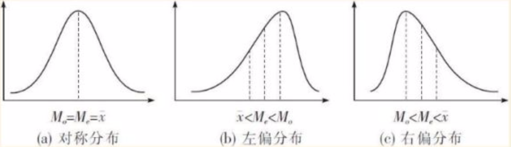
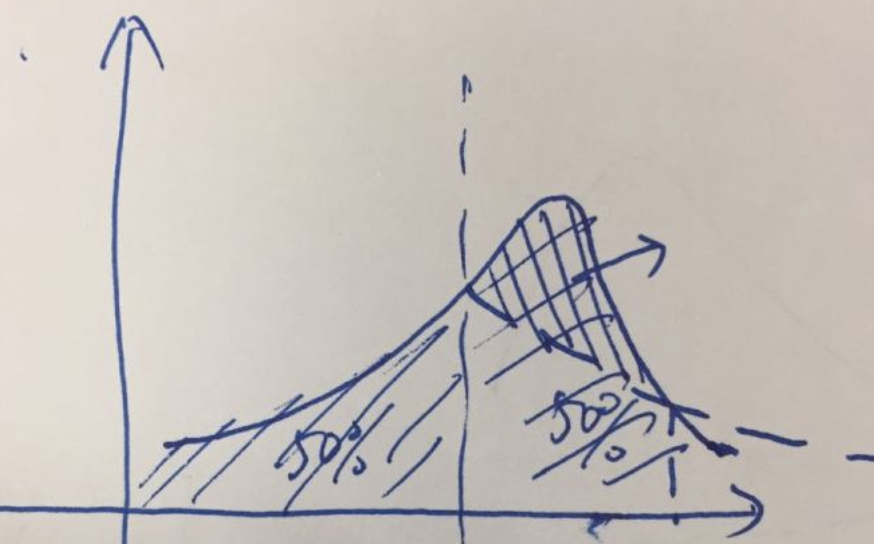

偏态
首先我们引入偏态分布的概念：偏态分布是与“正态分布”相对，曲线左右不对称的分布。
偏态分布分为正偏态（右偏）分布和负偏态（左偏）分布。
正偏也叫右偏，看起来好像是峰值在左，怎么会叫右偏呢？按维基百科的解释是：传统定义，均值大于中位数的称为右偏，也可以理解为长尾在右侧。同理可知，负偏也叫左偏。

均值、中位数与众数的关系
正偏态（右偏）分布：众数<中位数<均值
正偏态（左偏）分布：均值<中位数<众数
为什么会出现上面这个结论呢？下面的回答取自知乎，是看到的相对比较通俗的解释。
若分布处于左侧实线和右侧虚线的状态时，中位数和均值是相等的，可以理解为左右两边的值个数相同，两两平均到中位数上。但是实际情况是右侧小的值更多，大的值更少了，值的个数还是不变的。但是这样就不够抵消左侧的值，平均到中位数上了。所以平均值要向左移动。于是均值小于中位数。
